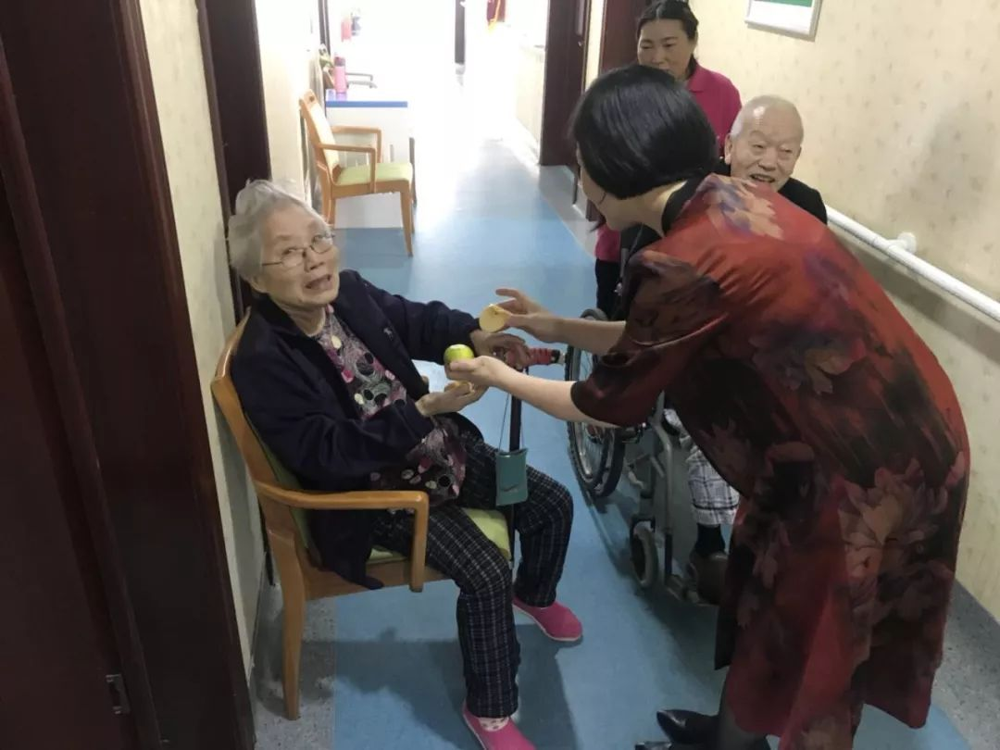
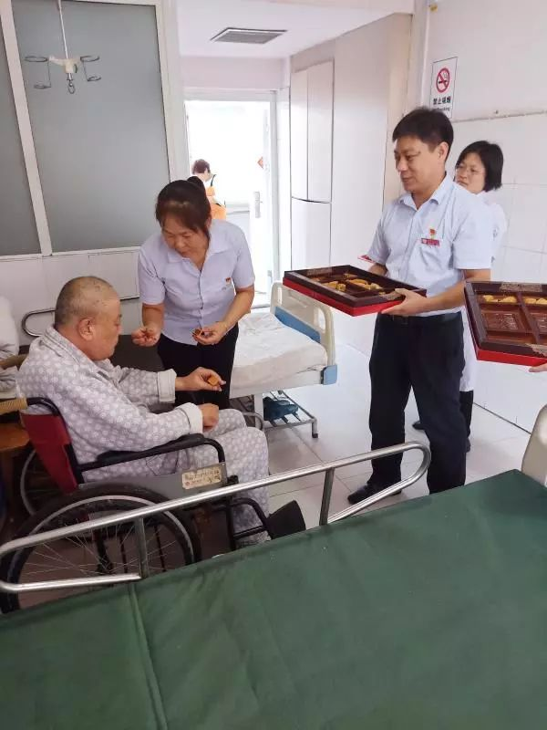
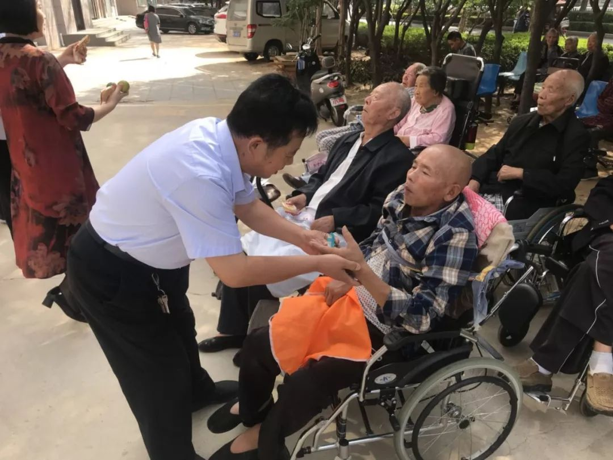
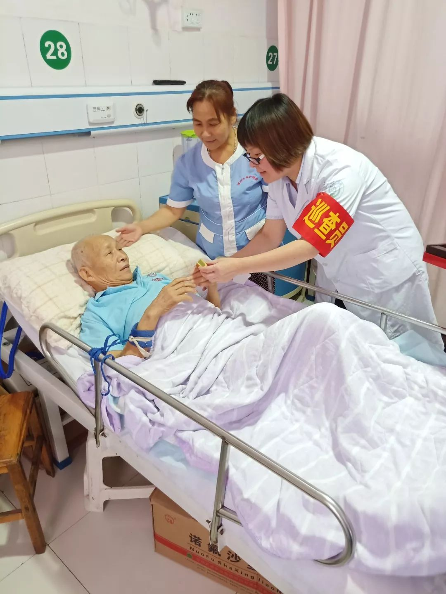

中秋正是阖家团聚的幸福日子，为了让不能回家与亲人团聚的老人们在这里过上一个平安幸福、欢乐祥和的节日，漯河万安老年公寓、漯河金康护理院的院领导及中层干部特意给老人准备了月饼、苹果等爱心加餐。从细微之处做起，让老人感受到大家庭的温暖、亲人般的祝福。
上午10点，金康万安两院院领导以及中层干部推着为老人准备好的水果和月饼来到了老人的房间，为每一位老人发放爱的祝福。
   这位老爷子虽然躺在床上，但是还是用手表示对我们这么用心服务表示感谢。
近年来，金康万安一直秉承“孝慈仁善”的文化理念，通过持续开展各种关爱老人的节日活动，让老人在这里感受到家的温暖，真正做到“老有所养、老有所依、老有所为、老有所乐”。